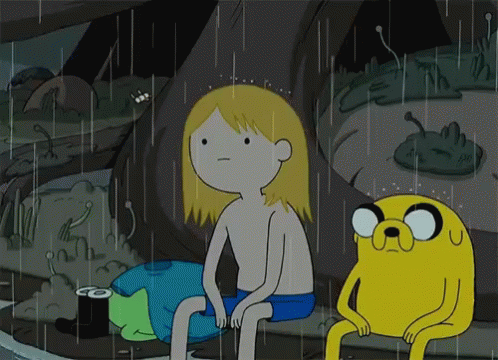
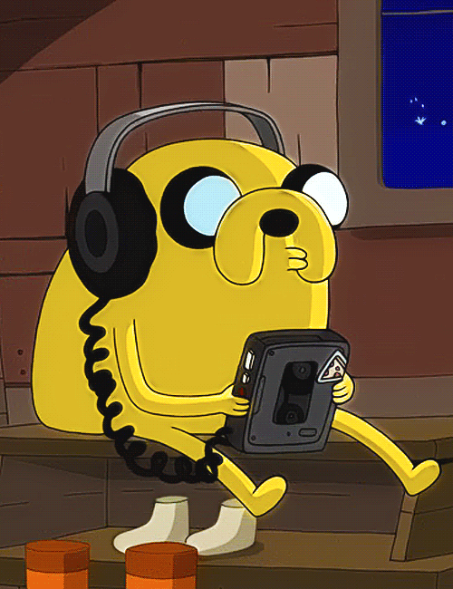

A AVENTURA VAI COMEÇAR
Hora de Aventura é uma série de TV animada criada por Pendleton Ward, produzida pela Frederator Studios e exibida pela Cartoon Network.
A série segue as aventuras de Finn, um garoto humano aventureiro, e o seu melhor amigo e irmão adotivo Jake, um cão com poderes que lhe permitem alterar a forma e tamanho conforme a sua vontade.
Finn e Jake habitam a pós-apocalíptica Terra de Ooo, onde interagem com os outros personagens principais da série.


Come along with me And the butterflies and bees We can wander through the forest And do so as we please
along with me To a cliff under a tree Where we can gaze upon the water As an everlasting dream
of my collections I'll share them all with you Maybe by next summer We won't have changed our tunes
We'll still want to be With the butterflies and bees Making up new numbers And living so merrily
All of my collections I'll share them all with you I'll be here for you always And always be for you
Come along with me And the butterflies and bees We can wander through the forest And do so as we please Living so merrily